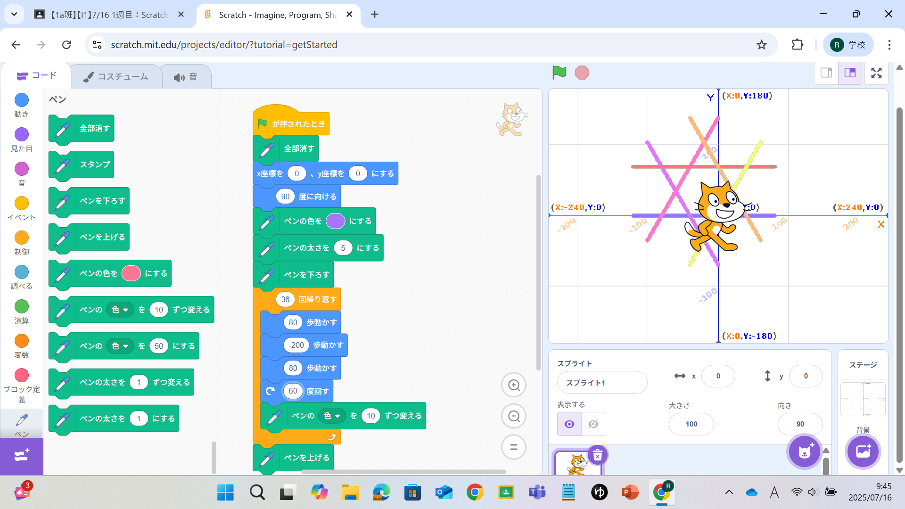
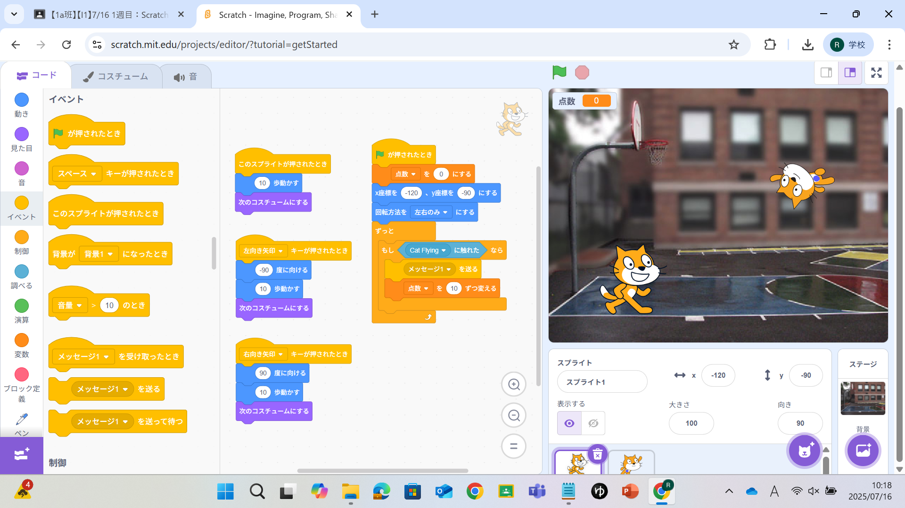

1週目のレポート ： 公大高専１年実習I-1
1a班18番 sacchan
第1週目
1-1 サイエンスアート

1.内容
scratchを用いてブロックプログラミングを行い、
キャラクターの動きに合わせて筆を動かしてラインアートをつくるプログラムを作成した。
2.感想
指示のブロック自体は全く同じであるが
ブロック内で指定する動作の大きさの値を少し変更するだけで実行時にできるラインアートが大きく変化しており、
数値を一つ間違えると大きく変わってしまうため注意が必要だと思ったと同時に、面白いとも思った。
1-2 ゲーム

1.内容
scratchを用いてブロックプログラミングを行い、
キャラクターを左右に動かして上から落ちてくるものをキャッチするゲームのプログラムを作成した。
2.感想
キャラクターが動くたびに次のコスチュームに変更すると、
ただ横にスライドしているだけでなくしっかりと歩いているように見えて便利な機能だと思った。
落ちてくるもののプログラムではキャラクターが触れた際には隠れるようにするプログラムだったが、
再び表示するプログラムを組まないと一度消えてそれきりなってしまうことに気づくことができず、
何故表示されないのかわからなかったため、自分にはもう少し柔軟な考えと発想が必要だと感じた。
1-3 ホームページ作成
私のホームページ
1.内容
githubのアカウント登録を行い、
I1の実習のレポートとして使用するこのホームページの作成を行った。
2.感想
英語での表記は不便だったためサイトを翻訳する機能を使用していたが、
翻訳機能がついていると正常に処理できない場合があるということを知って、
論文以外でも英語がわからないと困ることが多そうだと思った。
また、githubでは.pngなどが表示されていなかったため、どのファイルが何なのかがわかりにくく少々不便かもしれないと感じた。
各ページへのリンク
1週目のレポート
2週目のレポート
3週目のレポート
私のホームページ